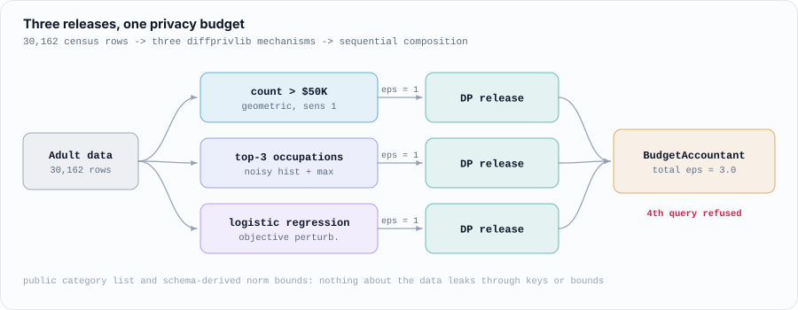
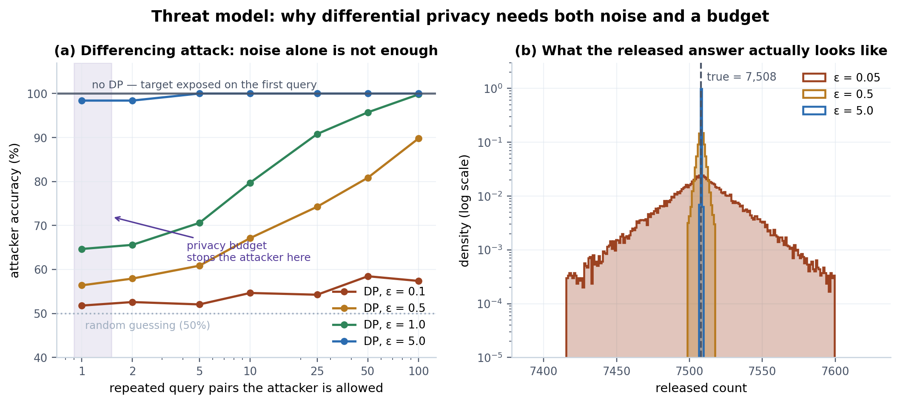
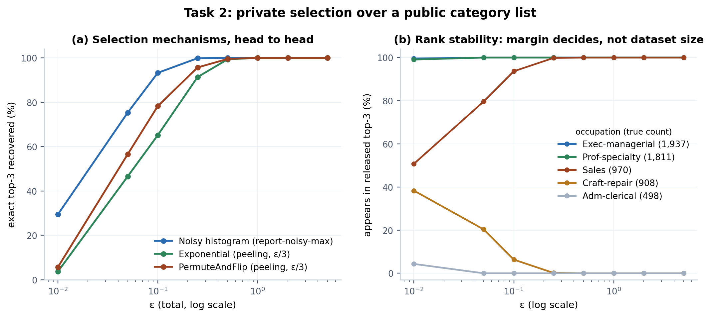
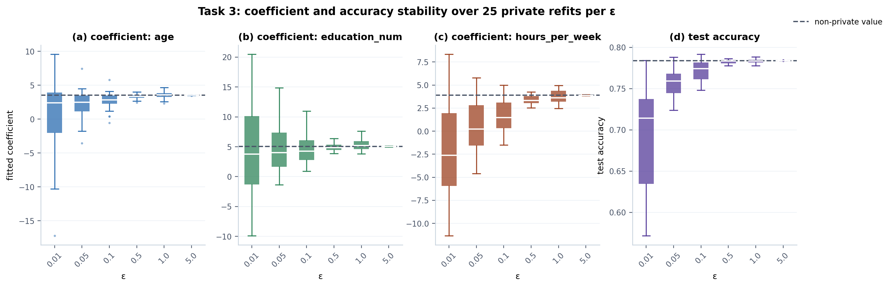
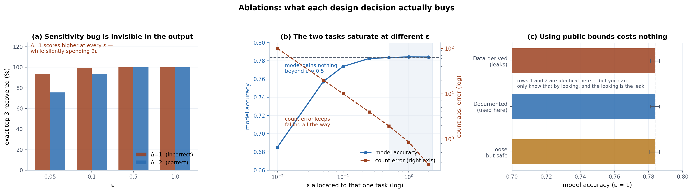

Differentially Private Analysis of the UCI Adult Dataset
A count, a top-3 selection, and a logistic regression released under pure ε-differential privacy with IBM diffprivlib — plus an empirical study of what each design decision actually costs.
Three releases over 30,162 census records: how many people earn over $50K, the three most
common occupations among them, and a logistic regression predicting income. Every mechanism comes
from IBM diffprivlib; none is hand-implemented. Beyond building them, the study
measures what each design decision costs, using 1,200–3,000 trials per sampling
experiment and 25 private refits per ε for the model.

Why the budget is not bookkeeping
A differencing attack asks two aggregate queries that differ by one person and
subtracts them. Without DP the target is exposed on the first query. At ε = 1 one query pair leaks
only a little (64.7% attacker accuracy against 50% chance), but 100 repetitions reach
99.8%: averaging defeats the noise. Noise stops the single query; only an enforced budget
stops the repeated one. So a BudgetAccountant caps the three releases at
ε = 3 and refuses a fourth query.

Top-3 selection: the margin decides
A list of names cannot be noised directly, so three selection mechanisms were compared at matched total ε. The noisy histogram with report-noisy-max wins at every ε below 1 (93.3% exact recovery at ε = 0.1, against 78.3% for PermuteAndFlip and 65.2% for the exponential mechanism), even when handicapped with twice the sensitivity. The reason is parallel composition: the 14 disjoint buckets cost ε once, while peeling splits ε three ways. PermuteAndFlip beating the exponential mechanism matches McKenna & Sheldon (2020).

Every failure in that table is the same swap: Sales (970) and Craft-repair (908), 62 people apart, trading third place. Selection accuracy is set by the margin between candidates, not by dataset size.
Accuracy hides sign errors

At ε = 0.01 the mean accuracy is 0.69, but individual runs land anywhere from 0.57 to 0.79.
Worse, the coefficients span roughly −17 to +20, and the median hours_per_week
coefficient is negative: the model learned the opposite of the true relationship
while still scoring 0.69, because 75% of people are in the majority class. By ε = 0.5 it is
indistinguishable from the non-private 0.784.
Ablations

- A bug that improves your metrics. The histogram's L1 sensitivity is 2; using 1 is a natural mistake. The wrong setting scores better at every ε (93.3% vs 75.6% at ε = 0.05) while silently spending twice the claimed ε, and nothing in the output reveals it. Δ = 1 at ε = 0.05 and Δ = 2 at ε = 0.10 both score exactly 93.3%, since both give noise scale 20.
- A hypothesis that turned out backwards. I expected starving the cheap count and feeding the model to beat an equal split. It does not: the model saturates around ε = 0.25–0.5, while the count keeps improving across the whole range. The better split is count 0.7 / top-3 0.3 / model 0.5, a total of ε = 1.5: half the privacy cost with comparable utility.
- Correctness is free. Bounds taken from public metadata instead of the data cost nothing measurable. Even deliberately loose bounds (age 0–120, hours 0–168) cost 0.0002 accuracy, well inside run-to-run noise.
Two leaks that noise does not fix
- Histogram keys. Two occupations have exactly one high earner. Iterating over the categories present in the data would reveal that person through the key alone, however much noise the value gets. The histogram iterates over a fixed public list of 14 occupations and noises the empty buckets too.
- Norm bounds. A
data_norminferred from the training data is a statistic about the most extreme person, released in the clear. Features are scaled with public schema ranges and clipped, bounding every row's norm by √3 without looking at the data.